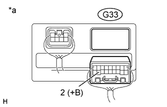
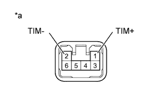
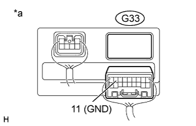
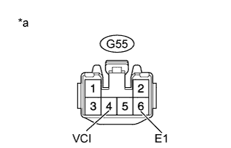
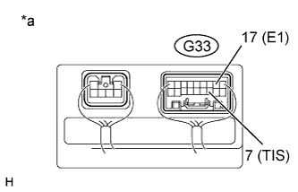

DTC B2610 Tilt Position Sensor or Tilt Motor Circuit Malfunction |
| DTC Code | Detection Condition | Trouble Area |
| B2610 | The tilt operation stops within the operation range while operating. |
|
| 1.PERFORM ACTIVE TEST USING INTELLIGENT TESTER (TILT OPERATION) |
Select the Active Test, use the intelligent tester to generate a control command, and then check that the steering wheel tilts up and down.
| Tester Display | Test Part | Control Range | Diagnostic Note |
| Tilt Operation | Tilt operation | UP/DOWN | - |
| Result | Proceed to |
| Steering wheel does not tilt up/down | A |
| Steering wheel tilts up/down | B |
|
| ||||
| A | |
| 2.CHECK HARNESS AND CONNECTOR (MULTIPLEX TILT AND TELESCOPIC ECU - BATTERY) |
|  |
Disconnect the G33 multiplex tilt and telescopic ECU connector.
Measure the voltage according to the value(s) in the table below.
| Tester Connection | Condition | Specified Condition |
| G33-2 (+B) - Body ground | Always | 11 to 14 V |
| *a | Rear view of wire harness connector (to Multiplex Tilt and Telescopic ECU) |
|
| ||||
| OK | |
| 3.CHECK HARNESS AND CONNECTOR (MULTIPLEX TILT AND TELESCOPIC ECU - BODY GROUND) |
 |
Measure the resistance according to the value(s) in the table below.
| Tester Connection | Condition | Specified Condition |
| G33-11 (GND) - Body ground | Always | Below 1 Ω |
| *a | Rear view of wire harness connector (to Multiplex Tilt and Telescopic ECU) |
|
| ||||
| OK | |
| 4.CHECK HARNESS AND CONNECTOR (MULTIPLEX TILT AND TELESCOPIC ECU - TILT MOTOR) |
Disconnect the G55 tilt motor connector.
Measure the resistance according to the value(s) in the table below.
| Tester Connection | Condition | Specified Condition |
| G33-10 (TIM+) - G55-1 (TIM+) | Always | Below 1 Ω |
| G33-1 (TIM-) - G55-2 (TIM-) | ||
| G33-10 (TIM+) - Body ground | Always | 10 kΩ or higher |
| G33-1 (TIM-) - Body ground |
|
| ||||
| OK | |
| 5.CHECK TILT MOTOR |
|  |
Apply 12 V battery voltage to the tilt motor connector. Then check the steering wheel tilt operation.
| Measurement Condition | Specified Condition |
| 12 V battery positive (+) lead → Terminal 1 (TIM+) 12 V battery negative (-) lead → Terminal 2 (TIM-) | The steering wheel tilts up. |
| 12 V battery positive (+) lead → Terminal 2 (TIM-) 12 V battery negative (-) lead → Terminal 1 (TIM+) | The steering wheel tilts down. |
| *a | Component without harness connected (Tilt Motor) |
|
| ||||
| OK | ||
| ||
| 6.CHECK HARNESS AND CONNECTOR (MULTIPLEX TILT AND TELESCOPIC ECU - TILT POSITION SENSOR) |
Disconnect the G33 multiplex tilt and telescopic ECU connector.
Disconnect the G55 tilt motor connector.
Measure the resistance according to the value(s) in the table below.
| Tester Connection | Condition | Specified Condition |
| G33-6 (VCI) - G55-4 (VCI) | Always | Below 1 Ω |
| G33-7 (TIS) - G55-5 (TIS) | ||
| G33-17 (E1) - G55-6 (E1) | ||
| G33-6 (VCI) - Body ground | Always | 10 kΩ or higher |
| G33-7 (TIS) - Body ground | ||
| G33-17 (E1) - Body ground |
|
| ||||
| OK | |
| 7.CHECK HARNESS AND CONNECTOR (MULTIPLEX TILT AND TELESCOPIC ECU - BODY GROUND) |
|  |
Measure the resistance according to the value(s) in the table below.
| Tester Connection | Condition | Specified Condition |
| G33-11 (GND) - Body ground | Always | Below 1 Ω |
| *a | Rear view of wire harness connector (to Multiplex Tilt and Telescopic ECU) |
|
| ||||
| OK | |
| 8.CHECK MULTIPLEX TILT AND TELESCOPIC ECU (VCI TERMINAL VOLTAGE) |
|  |
Reconnect the G33 multiplex tilt and telescopic ECU connector.
Measure the voltage according to the value(s) in the table below.
| Tester Connection | Switch Condition | Specified Condition |
| G55-4 (VCI) - G55-6 (E1) | Engine switch on (IG) | 8 to 14 V |
| *a | Front view of wire harness connector (to Tilt Motor) |
|
| ||||
| OK | |
| 9.CHECK TILT POSITION SENSOR |
|  |
Reconnect the G55 tilt motor connector.
Measure the voltage according to the value(s) in the table below.
| Tester Connection | Condition | Specified Condition |
| G33-7 (TIS) - G33-17 (E1) | Steering tilting up or tilting down | Pulse generation High: 8 to 14 V Low: Below 1 V |
| *a | Component with harness connected (Multiplex Tilt and Telescopic ECU) |
|
| ||||
| OK | ||
| ||